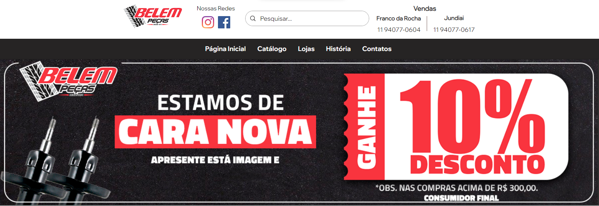

SocialPet
Site criado para facilitar a adoção e doação de Pets, criado inteiramente com PHP, HTML, JS e CSS
Pneus Ideal
Site criado para a empresa Belem Pneus via Wix por preferencia do cliente.
Belem Pneus
Sou atualmente o responsavel pelo site, tratando de novas medidas visuais e novas funcionalidades.
Belem Recapagem
Site criado para a empresa Belem Pneus via Wix por preferencia do cliente.

Belem Auto Peças
Site criado para a empresa Belem Pneus via Wix por preferencia do cliente.